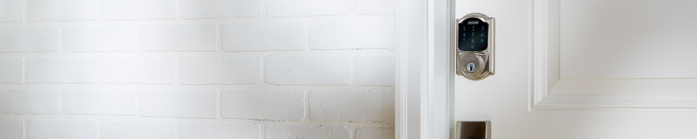
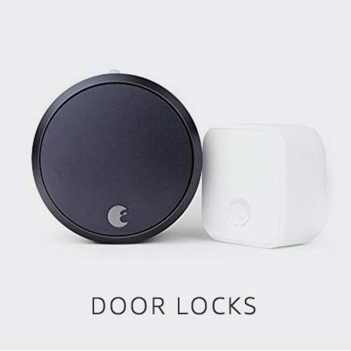
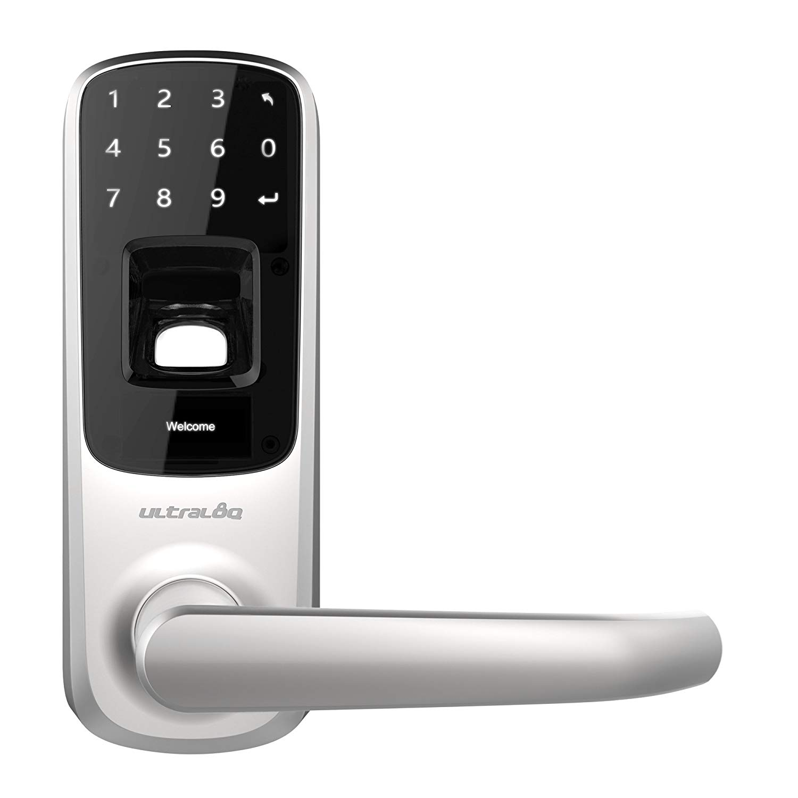

Welcome to the smart home store for door locks, where you'll find great prices on a variety of door locks to protect and secure your home!

Smart Home | Door Locks

Schlage Z-Wave Connect Camelot Touchscreen Deadbolt with Built-In Alarm
Price : $327.00
- Z wave technology connects to your home automation system and lets you lock or unlock your door
remotely via the web or smartphone
- 3 Alert modes (activity, tamper and forced entry) let you know when someone is coming or going
and communicate potential security threats.
- Fingerprint resistant touchscreen protects against fingerprints and smudges and ensures wear
patterns remain undetectable.
- Exterior Dimensions: 3 x 5 x 1 inches,Interior Dimensions: 3 x 8 x 2 inches.

August Smart Lock Pro + Connect, 3rd gen technology
Price : $213.00
- Control and monitor your door from anywhere. Lock and unlock your door, control keyless access
and keep track of who comes and goes, all from your phone.
- Be sure you’re secure with DoorSense. Only August has DoorSense to tell you if your door is securely closed and locked.
- Keep your existing lock and keys. Easily attaches to your existing deadbolt; use your existing keys at anytime.
Requires 110-240V.

Ultraloq UL3 BT Bluetooth Enabled Fingerprint and Touchscreen Smart Lock
Price : $184.49
- Advanced Fingerprint Identification, Anti-peep Touch Keypad Technology, View Logs via Ultraloq App;
Temperature: Inside lock body: 14°F (-10°C) to 131°F (55°C).
- Reversible Handle, Weatherproof, Intuitive OLED Display, Long Battery Life, Low Battery Alarm.
- World's First 5-in-1 Keyless Entry Smart Lock, Fingerprint + Code + Smartphone + Knock to Open + Key.
- Single Latch (Optional Deadbolt Cover Plate Required for Replacing Existing Deadbolt).Projection:0.6 inches.